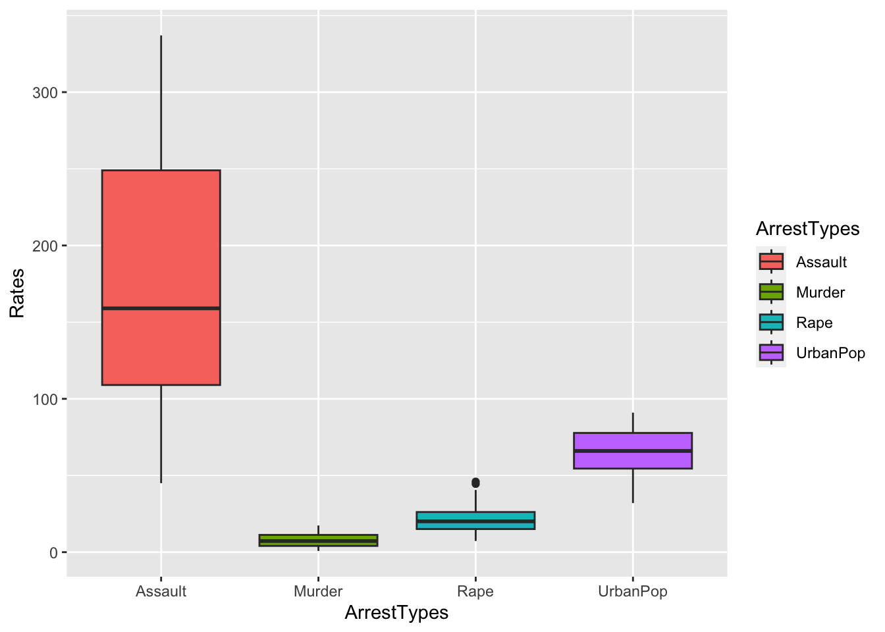
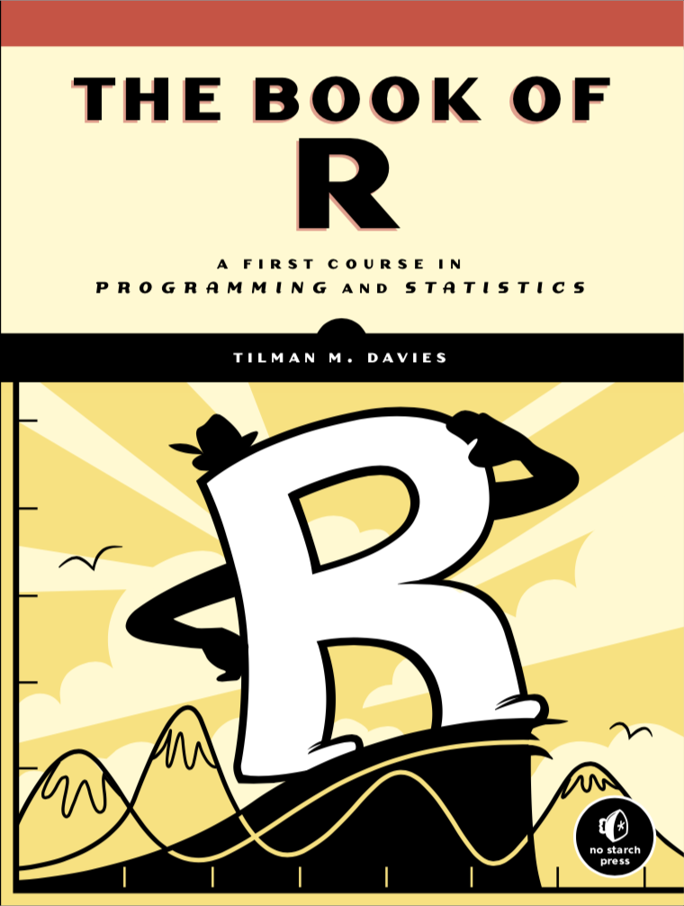
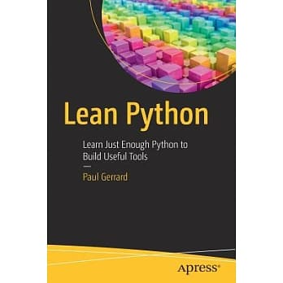
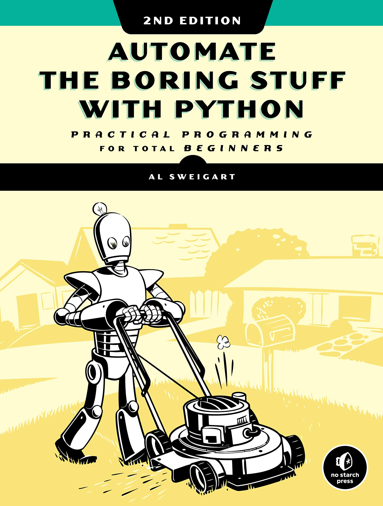

ENC2055: Introduction to Programming Languages for Linguistic Analysis
2023-06-02
Preface
Welcome to ENC2055 Introduction to Programming Languages for Linguistic Analysis. This is a graduate-level course tailored to those who are interested in computational text analytics and data science in general. Have you decided to embark upon a digital journey to your future career, there are a series of courses provided in the Department of English, NTNU, Taiwan, offering necessary skills and knowledge in important disciplines. This introductory course in basic computational coding would be a prerequisite course for many other advance-level courses. In particular, our faculty in the Linguistics track is dedicated to research on both theoretical and applied linguistics. Along with courses offered by other faculty members, this course provides a necessary foundation for the burgeoning discipline of computational text analytics.
Please note that while this course has no prerequisite from the students, it will turn out to be a prerequisite for a lot of advanced courses, such as Corpus Linguistics and Computational Linguistics. If you plan to step into this computational way of language processing, you need to take this course (or at least you need to learn how to code.)
Course Objective
The objective of this course is to provide a comprehensive introduction to programming languages with a special focus on its application in linguistic analyses. This course is especially tailored to those who do not have any background or experiences in coding. We will start from the very basic concepts, such as data types, variable assignments, control structures, to more complex procedures such as routines, functions, and other exploratory project-based tasks.
The course consists of a series of theme-based hands-on tutorials, which demonstrate how the flexibility of the programming language can help you become a more efficient and productive data scientist. Specifically, this course will use the language R as our featuring programming language and introduce you to , Rstudio, and a collection of R packages designed to work together to make linguistic analyses fast, fluent, and fun. In addition, we will briefly touch upon a few important constructs with another popular language in data science, Python .
By the end of the course, students should have a working knowledge of coding and an initial ability to advance a project independently as a data scientist.
In this course, we will not be dealing with complex maths like:
\[ f(x)=\frac{1}{\sqrt{2 \pi}} e^{-\frac{1}{2} x^{2}} \]
\[ P(A) = \sum P(\{ (e_1,\dotsc,e_N) \}) = \binom{N}{k} \cdot p^kq^{N-k} \]
We will not be dealing with linguistic theories as well. No transformations. No movements. No bindings. This course is all about (text) data processing and computational coding.
library(tidyverse)
data("USArrests")
# ?USArrests ## check description of the dataset
head(USArrests)USArrests %>%
pivot_longer(cols = c("Murder", "Assault", "UrbanPop", "Rape"), names_to = "ArrestTypes",
values_to = "Rates") %>%
ggplot(aes(ArrestTypes, Rates, fill = ArrestTypes)) + geom_boxplot()
## data() ## check more built-in datasetsIn the lecture notes, the text boxes in light blue refer to codes that you need to run in either terminal or your R/Python console. The text boxes in black background show the outputs of the code processing.
We will follow this presentation convention throughout the entire lecture notes.
print("Hello! R!")[1] "Hello! R!"Textbook
Throughout the semester, we will follow the materials provided on our course website (see below). We will not use a particular textbook for the course. However, I do like to recommend Wickham & Grolemund (2017) for its simplicity.

Also, another great book for R lovers, by Davies (2016):

And two more comprehensive books for Python basics: Gerrard (2016) and Sweigart (2020):

Course Website
We have a course website. You may need a password to get access to the course materials. If you are an officially enrolled student, please ask the instructor for the access code.
Assignments
Students are expected to complete the exercises included in each chapter/topic. The assignment due is always one week after the chapter/topic is completed. No late submission will be accepted. Students need to follow the Ch3 Code Format Convention for their submitted scripts.
Contributing to the Lecture Notes
Although I have tried every possible way to make sure that the contents are correct, I may still accidentally make mistakes in the materials. If you spot any errors and would like make suggestions for better solutions, I would be more than happy to hear from you.
To contribute your ideas, let’s use Hypothes.is, which is an amazing tool for website annotations.
Go to Hypothes.is, and click the “get-started” on the top-right corner of the homepage.
Install the the add-on for chrome, or other browser.
To add an annotation, select some text and then click the on the pop-up menu. To see the annotations of others, click the in the upper right-hand corner of the page.
Please turn on the Hypothes.is add-on when you are reading the course lecture notes, and you will see all public/shared annotations made by other course participants.
See Quick Start Guide for Students and Annotation Tips for Students.
At the beginning of the semester, I will share with the class a link to invite all the enrolled students to join a private group for annotation. But one can always provide feedbacks via the public annotations of the website.
Questions?
For more information related to this course, please see the FAQ on our course website or write me at any time at: alvinchen@ntnu.edu.tw
Necessary Packages
In this course, we will need the following R packages for tutorials and exercises.
library(chatgpt)
library(dplyr)
library(foreign)
library(gganimate)
library(ggplot2)
library(ggrepel)
library(ggridges)
library(Hmisc)
library(quanteda.textplots)
library(quanteda.textstats)
library(quanteda)
library(readr)
library(readtext)
library(reticulate)
library(showtext)
library(stringr)
library(tibble)
library(tidyr)
library(tidytext)
library(tidyverse)Interative Live Environment

Binder is an open-source tool that allows us to create an interactive environment to run our codes and scripts on the cloud. Through the link, we can launch an interactive RStudio environment in the web browser and run the R codes and scripts from the lecture notes. The cloud-based environment is pre-configured with essential tools required for the course, such as the R kernel, RStudio, and R libraries.
The Binder platform offers a solution to compatibility issues arising from the use of different operating systems, such as Windows, Mac OS, and Linux. The use of Binder in the classroom enables us to work with a consistent and reliable platform for the R programming needs.
Please note that any changes in the interactive Binder environment will not be retained upon closing the session.